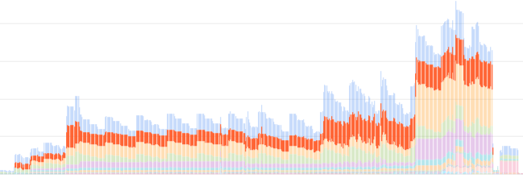

- Introduction
- Why?
- Rejected Strategies
- How?
- Bonus: Headless testing
- Final image definition
- Common issues
- Conclusion
Introduction
Last November I added a new job to our CI to cross compile our project for x86_64-pc-windows-msvc from an x86_64-unknown-linux-gnu host. I had wanted to blog about that at the time but never got around to it, but after making some changes and improvements last month to this, in addition to writing a new utility, I figured now was as good of a time as any to share some knowledge in this area for those who might be interested.
Why?
Before we get started with the How, I want to talk about why one might want to do this in the first place, as natively targeting Windows is a "known quantity" with the least amount of surprise. While there are reasons beyond the following, my primary use case for why I want to do cross compilation to Windows is our Continuous Delivery pipeline for my main project at Embark.
Speed
It's fairly common knowledge that, generally speaking, Linux is faster than Windows on equivalent hardware. From faster file I/O to better utilization of high core count machines, and faster process and thread creation, many operations done in a typical CI job such as compilation and linking tend to be faster on Linux. And since I am lazy, I'll let another blog post about cross compiling Firefox from Linux to Windows actually present some numbers in defense of this assertion.
Cost
Though we're now running a Windows VM in our on-premise data center for our normal Windows CD jobs, we actually used to run it in GCP. It was 1 VM with a modest 32 CPU count, but the licensing costs (Windows Server is licensed by core) alone accounted for >20% of our total costs for this particular GCP project.

While this single VM is not a huge deal relative to the total costs of our project, it's still a budget item that provides no substantive value, and on principle I'd rather have more/better CPUs, RAM, disk, or GPUs, that provide immediate concrete value in our CI, or just for local development.
Containers + k8s
This one is probably the most subjective, so strap in!
While fast CI is a high priority, it really doesn't matter how fast it is if it gives unreliable results. Since I am the (mostly) sole maintainer, (which yes, we're trying to fix) for our CD pipeline in a team of almost 40 people, my goal early on was to get it into a reliably working state that I could easily maintain with a minimal amount of my time, since I have other, more fun, things to do.
The primary way I did this was to build buildkite-jobify (we use Buildkite as our CI provider). This is just a small service that spawns Kubernetes (k8s) jobs for each of the CI jobs we run on Linux, based on configuration from the repo itself.
This has a few advantages and disadvantages over a more typical VM approach, which we use for x86_64-pc-windows-msvc (for now?), x86_64-apple-darwin, and aarch64-apple-darwin.
Pros
- Consistency - Every job run from the same container image has the exact same starting environment.
- Versioned - The image definitions are part of our monorepo, as well as the k8s job descriptions, so we get atomic updates of the environment CI jobs execute in with the code itself. This also makes rollbacks trivial if needed.
- Scalability - Scaling a k8s cluster up or down is fairly easily (especially in eg GKE, because $) as long as you have the compute resources. k8s also makes it easy to specify resource requests so that individual jobs can dynamically spin up on the most appropriate node at the time based on the other workloads currently running on the cluster.
- Movability - Since k8s is just running containers, it's trivial to move build jobs between different clusters, for example in our case, from GKE to our on-premise cluster.
Cons
- Clean builds - Clean builds are quite slow compared to incremental builds, however we mitigate this by using cargo-fetcher for faster crate fetching and sccache for compiler output caching.
- Startup times - Changing the image used for a build job means that every k8s node that runs an image it doesn't have needs to pull it before running. For example, the pull can take up to almost 2m for our
aarch64-linux-androidwhich is by far our largest image at almost 3GiB (the Android NDK/SDK are incredibly bloated). However, this is generally a one time cost per image per node and we don't update images so often that it is actually a problem in practice.
Rejected Strategies
Before we get into the how I just wanted to show two other strategies that could be used for cross compilation that you might want to consider if your needs are different than ours.
Using x86_64-pc-windows-gnu
To be honest, I rejected this one pretty much immediately simply because the gnu environment is not the "native" msvc environment for Windows. Targeting x86_64-pc-windows-gnu would not be representative for actual builds used by users, and it would be different from the local builds built by developers on Windows, which made it an unappealing option. That being said, generally speaking, Rust crates tend to support x86_64-pc-windows-gnu fairly well, which as we'll see later is a good thing due to my chosen strategy.
Using wine to run the MSVC toolchain
I briefly considered using wine to run the various components of the MSVC compiler toolchain, as that would be the most accurate way to match the native compilation for x86_64-pc-windows-msvc. However, we already use LLD when linking on Windows since it is vastly faster than the MSVC linker, so why not just replace the rest of the toolchain while we're at it? 😉 This kind of contradicts the reasons stated in x86_64-pc-windows-gnu since we'd be changing to a completely different compiler with different codegen, but this tradeoff is actually ok with me for a couple of reasons.
The first reason is that the driving force behind clang-cl, lld-link, and the other parts of LLVM replacing the MSVC toolchain, is so that Chrome can be built with LLVM for all of their target platforms. The size of the Chrome project dwarfs the amount of C/C++ code in our project by a huge margin, and (I assume) includes far more...advanced...C++ code than we depend on, so the risk of miscompilation or other issues compared to cl.exe seems reasonably low.
And secondly, we're actively trying to get rid of C/C++ dependencies as the Rust ecosystem matures and provides its own versions of C/C++ libraries we use. For example, at the time of this writing, we use roughly 800k lines of C/C++ code, a large portion of which comes from physx, which we will, hopefully, be able to replace in the future with something like rapier.
How?
Ok, now that I've laid out some reasons why you might want to consider cross compilation to Windows from Linux, let's see how we can actually do it! I'll be constructing a container image (in Dockerfile format) as we go that can be used to compile a Rust program. If you're only targeting C/C++ the broad strokes of this strategy will still be relevant, you'll just have a tougher time of it because...well, C/C++.
The strategy I chose is to use clang, which, like most compilers based off of LLVM (including rustc), is a native cross compiler, to compile any C/C++ code and assembly. Specifically this means using clang-cl and lld-link so that we, generally, don't need to modify any C/C++ code to take cross compilation into account.
Prerequisites
If you want to follow along at home, you'll need to be on Linux (though WSL might work?) with something that can build container images, like docker or podman.
1. Setup toolchain(s)
First thing we need are the actual toolchains needed to compile and link a full Rust project.
# We'll just use the official Rust image rather than build our own from scratch
FROM docker.io/library/rust:1.54.0-slim-bullseye
ENV KEYRINGS /usr/local/share/keyrings
RUN set -eux; \
mkdir -p $KEYRINGS; \
apt-get update && apt-get install -y gpg curl; \
# clang/lld/llvm
curl --fail https://apt.llvm.org/llvm-snapshot.gpg.key | gpg --dearmor > $KEYRINGS/llvm.gpg; \
echo "deb [signed-by=$KEYRINGS/llvm.gpg] http://apt.llvm.org/bullseye/ llvm-toolchain-bullseye-13 main" > /etc/apt/sources.list.d/llvm.list;
RUN set -eux; \
# Skipping all of the "recommended" cruft reduces total images size by ~300MiB
apt-get update && apt-get install --no-install-recommends -y \
clang-13 \
# llvm-ar
llvm-13 \
lld-13 \
# We're using this in step 3
tar; \
# ensure that clang/clang++ are callable directly
ln -s clang-13 /usr/bin/clang && ln -s clang /usr/bin/clang++ && ln -s lld-13 /usr/bin/ld.lld; \
# We also need to setup symlinks ourselves for the MSVC shims because they aren't in the debian packages
ln -s clang-13 /usr/bin/clang-cl && ln -s llvm-ar-13 /usr/bin/llvm-lib && ln -s lld-link-13 /usr/bin/lld-link; \
# Verify the symlinks are correct
clang++ -v; \
ld.lld -v; \
# Doesn't have an actual -v/--version flag, but it still exits with 0
llvm-lib -v; \
clang-cl -v; \
lld-link --version; \
# Use clang instead of gcc when compiling binaries targeting the host (eg proc macros, build files)
update-alternatives --install /usr/bin/cc cc /usr/bin/clang 100; \
update-alternatives --install /usr/bin/c++ c++ /usr/bin/clang++ 100; \
apt-get remove -y --auto-remove; \
rm -rf /var/lib/apt/lists/*;
2. Acquire Rust std lib
By default, rustup only installs the native host target of x86_64-unknown-linux-gnu, which we still need to compile build scripts and procedural macros, but since we're cross compiling we need to add the x86_64-pc-windows-msvc target as well to get the Rust std library. We could also build the standard library ourselves, but that would mean requiring nightly and taking time to compile something that we can just download instead.
# Retrieve the std lib for the target
RUN rustup target add x86_64-pc-windows-msvc
3. Acquire CRT and Windows 10 SDK
In all likelihood, you'll need the MSVCRT and Windows 10 SDK to compile and link most projects that target Windows. This is problematic because the official way to install them is, frankly, atrocious, in addition to not being redistributable (so no one but Microsoft can provide, say, a tarball with the needed files).
But really, our needs are relatively simple compared to a normal developer on Windows, as we just need the headers and libraries from the typical VS installation. We could if we wanted use the Visual Studio Build Tools from a Windows machine, or if we were feeling adventurous try to get it running under wine (warning: I briefly tried this but it requires .NET shenanigans that at the time were broken under wine) and then create our own tarball with the needed files, but that feels too slow and tedious.
So instead, I just took inspiration from other projects and created my own xwin program to download, decompress, and repackage the MSVCRT and Windows SDK into a form appropriate for cross compilation. This has several advantages over using the official installation methods.
- No cruft - Since this program is tailored specifically to getting only the files needed for compiling and linking we skip a ton of cruft, some of which you can opt out of, but some of which you cannot with the official installers. For example, even if you never target
aarch64-pc-windows-msvc, you will still get all of the libraries needed for it. - Faster - In addition to not even downloading stuff we don't need, all download, decompression, and disk writes are done in parallel. On my home machine with ~11.7MiB download speeds and a Ryzen 3900X I can download, decompress, and "install" the MSVCRT and Windows SDK in about 27 seconds.
- Fixups - While the CRT is generally fine, the Windows SDK headers and libraries are an absolute mess of casing (seriously, what maniac thought it would be a good idea to capitalize the
lin.lib!?), making them fairly useless on a case-sensitive file system. Rather than rely on using a case-insensitive file system on Linux,xwinjust adds symlinks as needed, so eg.windows.h->Windows.h,kernel32.lib->kernel32.Libetc.
We have two basic options for how we could get the CRT and SDK, either run xwin directly during image building, or run it separately and tarball the files and upload them to something like GCS and just retrieve them as needed in the future. We'll just use it directly while building the image since that's easier.
RUN set -eux; \
xwin_version="0.1.1"; \
xwin_prefix="xwin-$xwin_version-x86_64-unknown-linux-musl"; \
# Install xwin to cargo/bin via github release. Note you could also just use `cargo install xwin`.
curl --fail -L https://github.com/Jake-Shadle/xwin/releases/download/$xwin_version/$xwin_prefix.tar.gz | tar -xzv -C /usr/local/cargo/bin --strip-components=1 $xwin_prefix/xwin; \
# Splat the CRT and SDK files to /xwin/crt and /xwin/sdk respectively
xwin --accept-license 1 splat --output /xwin; \
# Remove unneeded files to reduce image size
rm -rf .xwin-cache /usr/local/cargo/bin/xwin;
4. Override cc defaults
cc is the Rust ecosystem's primary (we'll get to the most common exception later) way to compile C/C++ code for use in Rust crates. By default it will try and use cl.exe and friends when targeting the msvc environment, but since we don't have that, we need to inform it what we actually want it to use instead. We also need to provide additional compiler options to clang-cl to avoid common problems when compiling code that assumes that targeting x86_64-pc-windows-msvc can only be done with the MSVC toolchain.
We also need to tell lld where to search for libraries. We could place the libs in one of the default lib directories lld will search in, but that would mean changing the layout of the CRT and SDK library directories, so it's generally easier to just specify them explicitly instead. We use RUSTFLAGS for this, which does mean that if you are specifying things like -Ctarget-feature=+crt-static in .cargo/config.toml you will need to reapply them in the container image either during image build or by overriding the environment at runtime to get everything working.
# Note that we're using the full target triple for each variable instead of the
# simple CC/CXX/AR shorthands to avoid issues when compiling any C/C++ code for
# build dependencies that need to compile and execute in the host environment
ENV CC_x86_64_pc_windows_msvc="clang-cl" \
CXX_x86_64_pc_windows_msvc="clang-cl" \
AR_x86_64_pc_windows_msvc="llvm-lib" \
# Note that we only disable unused-command-line-argument here since clang-cl
# doesn't implement all of the options supported by cl, but the ones it doesn't
# are _generally_ not interesting.
CL_FLAGS="-Wno-unused-command-line-argument -fuse-ld=lld-link /imsvc/xwin/crt/include /imsvc/xwin/sdk/include/ucrt /imsvc/xwin/sdk/include/um /imsvc/xwin/sdk/include/shared" \
RUSTFLAGS="-Lnative=/xwin/crt/lib/x86_64 -Lnative=/xwin/sdk/lib/um/x86_64 -Lnative=/xwin/sdk/lib/ucrt/x86_64"
# These are separate since docker/podman won't transform environment variables defined in the same ENV block
ENV CFLAGS_x86_64_pc_windows_msvc="$CL_FLAGS" \
CXXFLAGS_x86_64_pc_windows_msvc="$CL_FLAGS"
As already noted above in the reasons why we went this route, we use lld-link even when compiling on Windows hosts due to its superior speed over link.exe. So for our project we just set it in our .cargo/config.toml so it's used regardless of host platform.
[target.x86_64-pc-windows-msvc]
linker = "lld-link" # Note the lack of extension, which means it will work on both Windows and unix style platforms
If you don't already use lld-link when targeting Windows, you'll need to add an additional environment variable so that cargo knows what linker to use, otherwise it will default to link.exe.
ENV CARGO_TARGET_X86_64_PC_WINDOWS_MSVC_LINKER=lld-link
5. Profit
Building a container image from this Dockerfile spec should give allow you to run containers capable of compiling and linking a Rust project targeting Windows, including any C/C++ code that might be used as a dependency....mostly.
cargo build --target x86_64-pc-windows-msvc
Bonus: Headless testing
Of course, though compiling and linking a Rust project on Linux is one thing, our CD pipeline also needs to run tests! I've mentioned wine several times so far as a way you could run Windows programs such as the MSVC toolchain under Linux, so naturally, that's what we're going to do with our test executables.
1. Install
Debian tends to update packages at a glacial pace, as in the case of wine where the 5.0.3 version packaged in bullseye is about 9 months out of date. In this case, it actually matters, as some crates, for example mio, rely on relatively recent wine releases to implement features or fix bugs. Since mio is a foundational crate in the Rust ecosystem, we'll be installing wine's staging version, which is 6.15 at the time of this writing.
RUN set -eux; \
curl --fail https://dl.winehq.org/wine-builds/winehq.key | gpg --dearmor > $KEYRINGS/winehq.gpg; \
echo "deb [signed-by=$KEYRINGS/winehq.gpg] https://dl.winehq.org/wine-builds/debian/ bullseye main" > /etc/apt/sources.list.d/winehq.list; \
# The way the debian package works requires that we add x86 support, even
# though we are only going be running x86_64 executables. We could also
# build from source, but that is out of scope.
dpkg --add-architecture i386; \
apt-get update && apt-get install --no-install-recommends -y winehq-staging; \
apt-get remove -y --auto-remove; \
rm -rf /var/lib/apt/lists/*;
2. Specify runner
By default, cargo will attempt to run test binaries natively, but luckily this behavior is trivial to override by supplying a single environment variable to tell cargo how it should run each test binary. This method is also how you can run tests for wasm32-unknown-unknown locally via a wasm runtime like wasmtime. 🙂
ENV \
# wine can be quite spammy with log messages and they're generally uninteresting
WINEDEBUG="-all" \
# Use wine to run test executables
CARGO_TARGET_X86_64_PC_WINDOWS_MSVC_RUNNER="wine"
3. Test
Now we can compile, link, and test Windows executables with just a standard cargo invocation.
cargo test --target x86_64-pc-windows-msvc
Final image definition
Putting it all together, here is an image definition that should allow you to cross compile to Windows and run headless tests, without needing a Windows install at any step.
# We'll just use the official Rust image rather than build our own from scratch
FROM docker.io/library/rust:1.54.0-slim-bullseye
ENV KEYRINGS /usr/local/share/keyrings
RUN set -eux; \
mkdir -p $KEYRINGS; \
apt-get update && apt-get install -y gpg curl; \
# clang/lld/llvm
curl --fail https://apt.llvm.org/llvm-snapshot.gpg.key | gpg --dearmor > $KEYRINGS/llvm.gpg; \
# wine
curl --fail https://dl.winehq.org/wine-builds/winehq.key | gpg --dearmor > $KEYRINGS/winehq.gpg; \
echo "deb [signed-by=$KEYRINGS/llvm.gpg] http://apt.llvm.org/bullseye/ llvm-toolchain-bullseye-13 main" > /etc/apt/sources.list.d/llvm.list; \
echo "deb [signed-by=$KEYRINGS/winehq.gpg] https://dl.winehq.org/wine-builds/debian/ bullseye main" > /etc/apt/sources.list.d/winehq.list;
RUN set -eux; \
dpkg --add-architecture i386; \
# Skipping all of the "recommended" cruft reduces total images size by ~300MiB
apt-get update && apt-get install --no-install-recommends -y \
clang-13 \
# llvm-ar
llvm-13 \
lld-13 \
# get a recent wine so we can run tests
winehq-staging \
# Unpack xwin
tar; \
# ensure that clang/clang++ are callable directly
ln -s clang-13 /usr/bin/clang && ln -s clang /usr/bin/clang++ && ln -s lld-13 /usr/bin/ld.lld; \
# We also need to setup symlinks ourselves for the MSVC shims because they aren't in the debian packages
ln -s clang-13 /usr/bin/clang-cl && ln -s llvm-ar-13 /usr/bin/llvm-lib && ln -s lld-link-13 /usr/bin/lld-link; \
# Verify the symlinks are correct
clang++ -v; \
ld.lld -v; \
# Doesn't have an actual -v/--version flag, but it still exits with 0
llvm-lib -v; \
clang-cl -v; \
lld-link --version; \
# Use clang instead of gcc when compiling binaries targeting the host (eg proc macros, build files)
update-alternatives --install /usr/bin/cc cc /usr/bin/clang 100; \
update-alternatives --install /usr/bin/c++ c++ /usr/bin/clang++ 100; \
apt-get remove -y --auto-remove; \
rm -rf /var/lib/apt/lists/*;
# Retrieve the std lib for the target
RUN rustup target add x86_64-pc-windows-msvc
RUN set -eux; \
xwin_version="0.1.1"; \
xwin_prefix="xwin-$xwin_version-x86_64-unknown-linux-musl"; \
# Install xwin to cargo/bin via github release. Note you could also just use `cargo install xwin`.
curl --fail -L https://github.com/Jake-Shadle/xwin/releases/download/$xwin_version/$xwin_prefix.tar.gz | tar -xzv -C /usr/local/cargo/bin --strip-components=1 $xwin_prefix/xwin; \
# Splat the CRT and SDK files to /xwin/crt and /xwin/sdk respectively
xwin --accept-license 1 splat --output /xwin; \
# Remove unneeded files to reduce image size
rm -rf .xwin-cache /usr/local/cargo/bin/xwin;
# Note that we're using the full target triple for each variable instead of the
# simple CC/CXX/AR shorthands to avoid issues when compiling any C/C++ code for
# build dependencies that need to compile and execute in the host environment
ENV CC_x86_64_pc_windows_msvc="clang-cl" \
CXX_x86_64_pc_windows_msvc="clang-cl" \
AR_x86_64_pc_windows_msvc="llvm-lib" \
# wine can be quite spammy with log messages and they're generally uninteresting
WINEDEBUG="-all" \
# Use wine to run test executables
CARGO_TARGET_X86_64_PC_WINDOWS_MSVC_RUNNER="wine" \
# Note that we only disable unused-command-line-argument here since clang-cl
# doesn't implement all of the options supported by cl, but the ones it doesn't
# are _generally_ not interesting.
CL_FLAGS="-Wno-unused-command-line-argument -fuse-ld=lld-link /imsvc/xwin/crt/include /imsvc/xwin/sdk/include/ucrt /imsvc/xwin/sdk/include/um /imsvc/xwin/sdk/include/shared" \
# Let cargo know what linker to invoke if you haven't already specified it
# in a .cargo/config.toml file
CARGO_TARGET_X86_64_PC_WINDOWS_MSVC_LINKER="lld-link" \
RUSTFLAGS="-Lnative=/xwin/crt/lib/x86_64 -Lnative=/xwin/sdk/lib/um/x86_64 -Lnative=/xwin/sdk/lib/ucrt/x86_64"
# These are separate since docker/podman won't transform environment variables defined in the same ENV block
ENV CFLAGS_x86_64_pc_windows_msvc="$CL_FLAGS" \
CXXFLAGS_x86_64_pc_windows_msvc="$CL_FLAGS"
# Run wineboot just to setup the default WINEPREFIX so we don't do it every
# container run
RUN wine wineboot --init
Here is a gist with the same dockerfile, and an example of how you can build it. I'm using podman here, but docker should also work.
curl --fail -L -o xwin.dockerfile https://gist.githubusercontent.com/Jake-Shadle/542dfa000a37c4d3c216c976e0fbb973/raw/bf6cff2bd4ad776d3def8520adb5a5c657140a9f/xwin.dockerfile
podman -t xwin -f xwin.dockerfile .
Common issues
Unfortunately, everything is not sunshine and unicorns where cross compiling is concerned, but all of them are solvable, at least in principle.
CMake
It's not exactly a secret that I am not a fan of CMake. Inexplicably (to me at least), CMake has become the default way to configure and build open source C/C++ code. As I basically only use Rust now, this would normally not bother me, however, many Rust crates still wrap C/C++ libraries, and due to the ubiquitous nature of CMake, a significant minority of those crates just directly use cmake (or worse, direct invocation) to let CMake drive the building of the underlying C/C++ code. This is great excusable when it works, however, in my experience, CMake scripts tend to be a house of cards that falls down at the slightest deviation from the "one true path" intended by the author(s) of the CMake scripts and cross compiling to Windows is a big deviation that not only knocks down the cards but also sets them on fire.
The simplest and most effective solution to CMake issues is to replace it with cc. In some cases like Physx or spirv-tools that can be a fair amount of work, but in many cases it's not much. The benefits of course extend beyond just making cross compilation easier, it also gets rid of the CMake installation dependency, as well as just making it easier for outside contributors to understand how the C/C++ code is built, since they don't need to actually crawl through some project's CMake scripts trying to figure out what the hell is going on, they can just look at the build.rs file instead.
MASM
Unfortunately, we don't need to worry about just Rust, C, and C++ in some Rust projects, there are also a small number of crates here and there which also use assembly. While in the future this will be able to be handled natively in rustc, we have to deal with the present, and unfortunately the present contains multiple assemblers with incompatible syntax. In the Microsoft toolchain, ml64.exe assembles MASM, and while there are ongoing efforts to get LLVM to assemble MASM via llvm-ml, the fact that the last update I can find is from October 2020, and there is no project page for llvm-ml like there for other llvm tools, tells me I might be wasting my time trying to get it to work for all assembly that we need to compile.
Luckily, there is a fairly easy workaround for this gap until llvm-ml becomes more mature. Even though we aren't targeting x86_64-pc-windows-gnu for the reasons stated above, the few projects that we use that use assembly generally do have both a MASM version as well as a GAS version so that people who want to can target x86_64-pc-windows-gnu. However, since cross compilation to Windows from a non-Windows platform is fairly rare, you'll often need to provide PRs to projects to fix up assumptions made about the target and host being the same. And unfortunately, this niche case also comes with a bit of maintenance burden that maintainers of a project might be uncomfortable with taking since they can't easily provide coverage, which is a totally fair reason to not merge such a PR.
Compiler Target Confusion
This one is the rarest of all, at least anecdotally, as I only encountered this kind of issue in Physx. Basically, the issue boils down to a project assuming that Windows == MSVC toolchain and Clang != Windows, which can result in (typically) preprocessor logic errors.
For example, here we have a clang specific warning being disabled for a single function, except it's fenched by both using clang as the compiler as well as targeting Linux, which means targeting Windows won't disable the warning, and if warnings are treated as errors, we'll get a compile failure.
@see PxCreateFoundation()
*/
#if PX_CLANG
-#if PX_LINUX
-#pragma clang diagnostic push
-#pragma clang diagnostic ignored "-Wreturn-type-c-linkage"
-#endif // PX_LINUX
+ #pragma clang diagnostic push
+ #pragma clang diagnostic ignored "-Wreturn-type-c-linkage"
#endif // PX_CLANG
PX_C_EXPORT PX_FOUNDATION_API physx::PxFoundation& PX_CALL_CONV PxGetFoundation();
#if PX_CLANG
-#if PX_LINUX
-#pragma clang diagnostic pop
-#endif // PX_LINUX
+ #pragma clang diagnostic pop
#endif // PX_CLANG
namespace physx
For the most part these kinds of problems won't occur since clang-cl very effectively masquerades as cl, including setting predefined macros like _MSC_VER and others so that a vast majority if C/C++ code that targets Windows "just works".
Conclusion
And there you have it, a practical summary on how to cross compile Rust projects for x86_64-pc-windows from a Linux host or container, I hope you've found at least some of this information useful!
As for next steps, my team is rapidly improving our renderer built on top of Vulkan and rust-gpu, but our non-software rasterization testing is mostly limited to a few basic tests on our Mac VMs since they are the only ones with GPUs. While I am curious about getting rendering tests working for Windows under wine, I am also quite hesitant. While wine and Proton have been making big steps and support a large amount of Windows games, we are using fairly bleeding edge parts of Vulkan like ray tracing, and running rendering tests on Linux means you're now running on top of the Linux GPU drivers rather than the Windows ones, making test results fairly suspect on whether they are actually detecting issues that might be present in a native Windows environment. It could still be fun though!
While it might seem like I hate Windows due to the content of this post, that's very much not the case. I am comfortable in Windows having used it for 20+ years or so both personally and professionally, I just prefer Linux these days, especially for automated infrastructure like CD which this post is geared towards...
..however, the same cannot be said for Apple/Macs, as I do hate them with the fiery passion of a thousand suns. Maintaining "automated" Mac machines is one of the most deeply unpleasant experiences of my career, one I wouldn't wish on my worst enemy, but since Macs are one of our primary targets (thankfully iOS is off the table due to "reasons"), we do need to build and test it along with our other targets. So maybe cross compiling to Macs will be in a future post. 😅